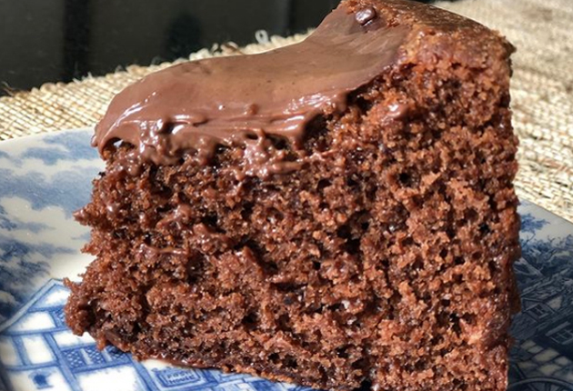
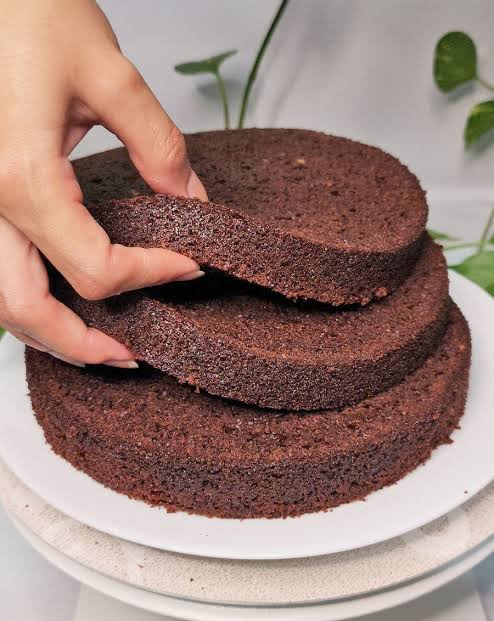
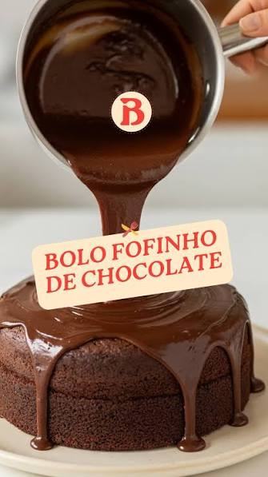
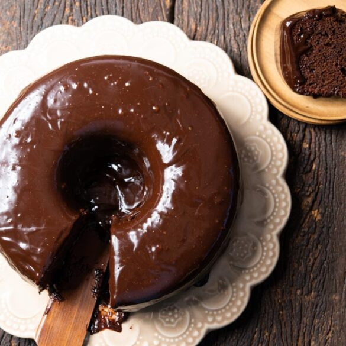

Bolo fofinho de chocola

Ingredientes
Massa

- 1/2 xicara(s) de óleo
- 3 unidades(s) ovo
- 11/2 xícara(s) de leite
- 2 xícara(s) de açúcar
- 1 xícara(s) de chocolate em pó
- 1 colher(es) de sopa de fermento
Cobertuda

- 1 caixinha de creme de leite
- 2 barra de chocolate
Modo de Preparo
- Bata os ovos, o óleo e o leite no fouet, liquididificador ou batedor.
- Em seguida, acrescente os ingredientes secos e mistu bem.
- Coloque a massa em uma forma untada e leve ao forno a 180° por 45 minutos ou até furar com o palito e sair sequinho.
- Enquanto isso, derreta o chocolate em banho-maria e misture bem com o creme de leite para a cobertura.
Clique Aqui.
